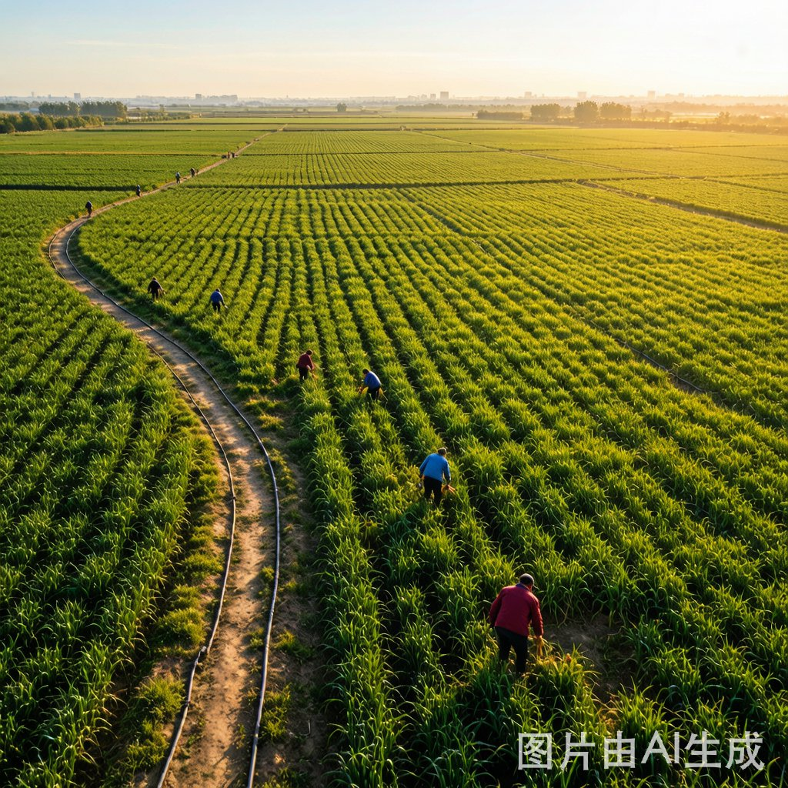
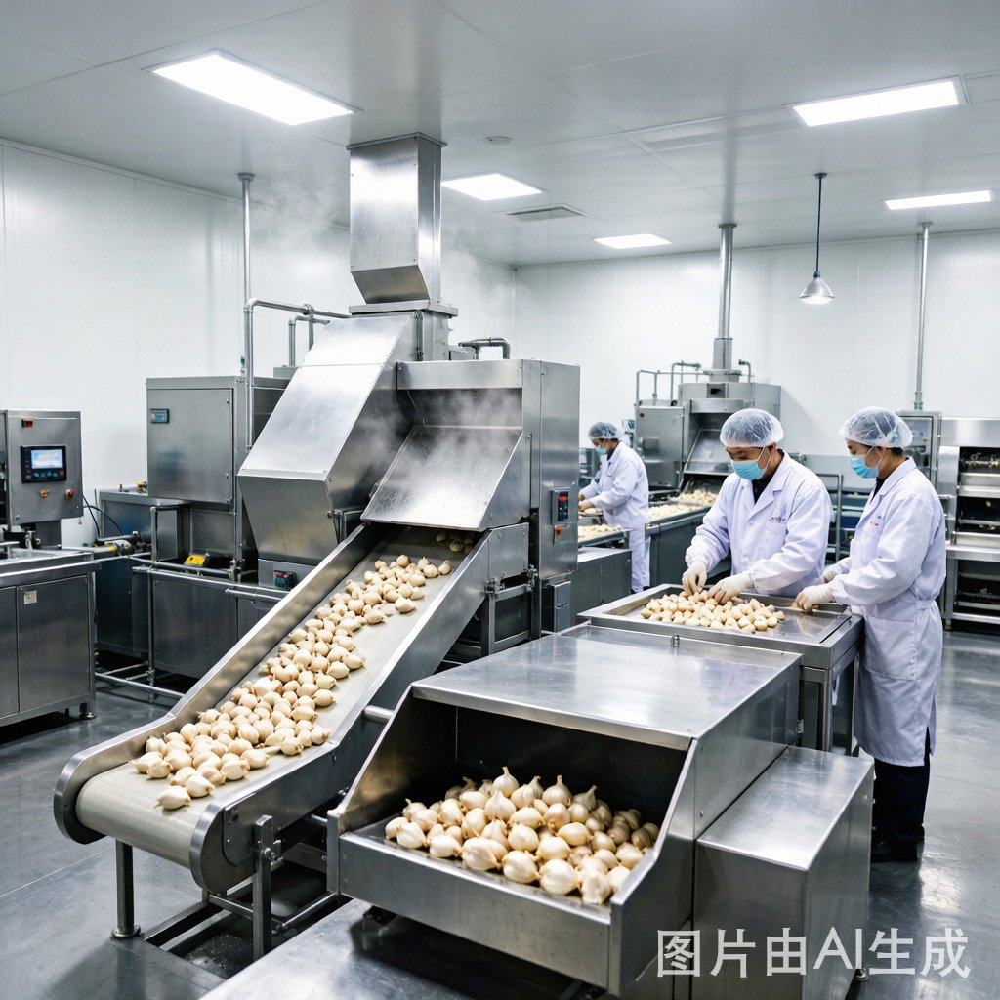

A garlic export company rooted in Shandong's heartland for 20+ years
Full-chain garlic supply — from farm to global markets
Direct supply of Purple Skin and Pure White Garlic from origin farms.
Dehydrated garlic flakes for food processing and seasoning industry.
From seed selection to planting, harvesting, sorting, processing, cold storage, packing, logistics, and export.
Shandong Province — China's core garlic producing region
Two decades of garlic trade expertise

Heneng International Trade Group (Shandong) Co., Ltd. is a garlic export company based in Heze, Shandong Province, China. Founded in 2004, we have grown from a local agricultural trading business into an international garlic supplier serving importers in over 50 countries.
Our core business is the export of fresh garlic (purple skin and pure white varieties) and dehydrated garlic products. We manage the full supply chain from contract farming and harvest supervision to processing, cold storage, packaging, and global logistics.
Shandong Province — China's garlic heartland
Our garlic is sourced from Shandong Province, which produces over 60% of China's garlic export volume. The region's fertile soil, temperate climate, and decades of farming expertise create ideal conditions for growing premium-quality garlic with excellent size, flavor, and storage characteristics.
We work directly with contract farmers across 200,000+ mu (13,000+ hectares) of garlic fields. Our agronomists monitor crop health throughout the growing season, from planting in October through harvest in June, ensuring consistent quality from every harvest.
200,000+ mu
May - June
50,000 MT capacity

Serving 50+ countries across 6 continents
Indonesia, Vietnam, Philippines, Malaysia, Thailand, Singapore, Myanmar, Cambodia
Saudi Arabia, UAE, Qatar, Kuwait, Bahrain, Oman, Iraq, Jordan, Lebanon
Nigeria, Egypt, South Africa, Ghana, Kenya, Morocco, Algeria, Tunisia, Senegal
Brazil, USA, Canada, Mexico, Colombia, Peru, Chile, Argentina, Ecuador
Netherlands, Germany, UK, France, Spain, Italy, Poland, Romania, Bulgaria
Australia, New Zealand, Russia, Kazakhstan, Uzbekistan, Tajikistan, Turkmenistan
From farm to port to your warehouse — seamless global delivery
Qingdao Port (500km from facility) — one of China's largest container ports with weekly sailings to all major global destinations. Alternative ports: Tianjin, Lianyungang.
50,000 MT cold storage capacity at -1 to 0 degrees Celsius. Reefer container arrangements for temperature-sensitive shipments. Year-round supply from June through March.
Full documentation support: Commercial Invoice, Packing List, B/L, Certificate of Origin, Phytosanitary Certificate, Fumigation Certificate, Form E (ASEAN), and health certificates.
FOB Qingdao, CIF destination port, or DDP door-to-door. We work with your freight forwarder or can recommend reliable partners in your region.
From field to shipping — every step is monitored and verified
Regular field sampling during growing season to monitor crop health, pesticide residue, and garlic quality.
Post-harvest sorting by size, color, and quality. Defective bulbs removed. Graded into standard specifications.
For dehydrated products: hygienic processing environment, metal detection, and quality checks.
Verify packing materials, weight accuracy, labeling, and seal integrity before products leave the facility.
Pre-loading container inspection: cleanliness, temperature settings, and proper stowage verification.
Full export documentation, real-time shipment tracking, and after-sales support throughout the journey.
Internationally recognized quality and food safety standards
20+ years of experience. 50+ countries served. Reliable quality, competitive pricing.
Contact Us